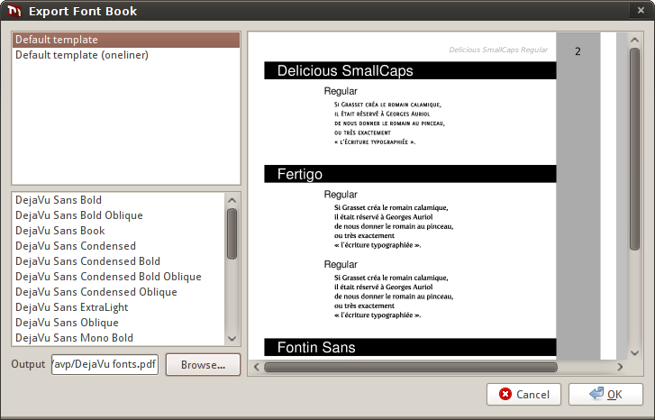
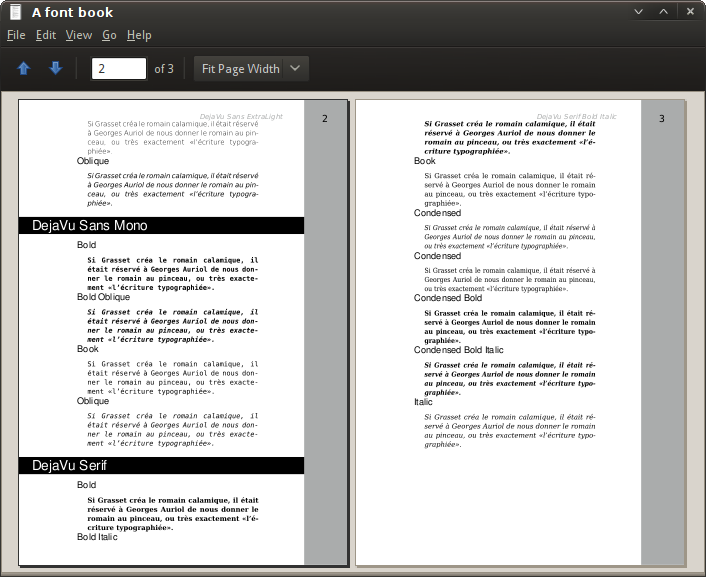

Les catalogues de polices sont probablement le moyen le plus simple de présenter les polices que vous avez conçues à vos clients potentiels. Fontmatrix facilite grandement la création de catalogues de polices.
Par exemple, vous devez créer un catalogue de toutes les polices conçues par votre entreprise en 2009.
Cela affinera la liste des polices disponibles pour n'afficher que les polices qui ont été créées ou mises à jour en 2009 par votre entreprise. Vous voudrez maintenant probablement accéder à cette boîte de dialogue :

Ouvrez le fichier pour vérifier le résultat :
